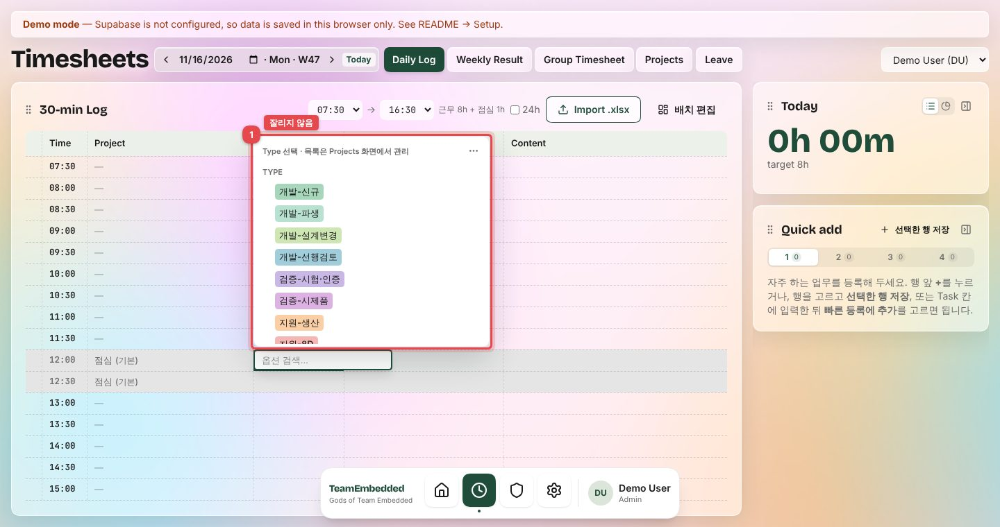
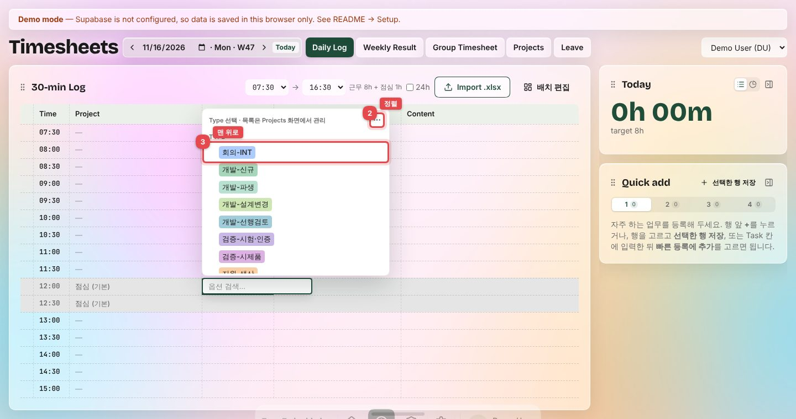
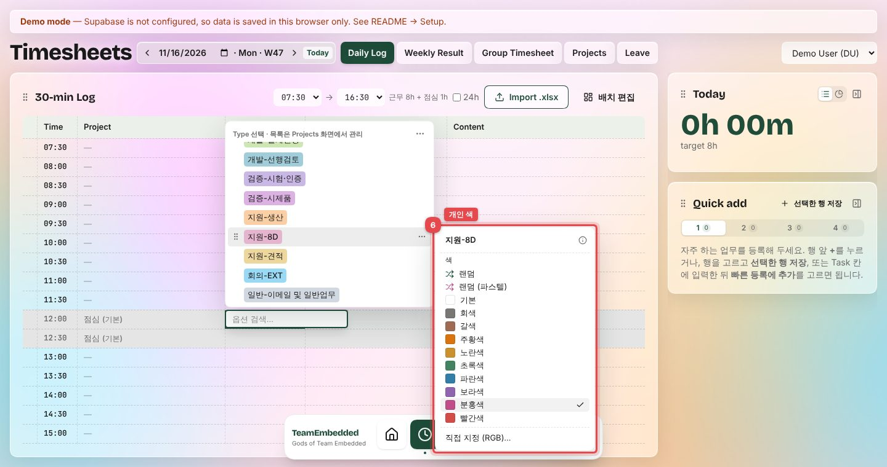
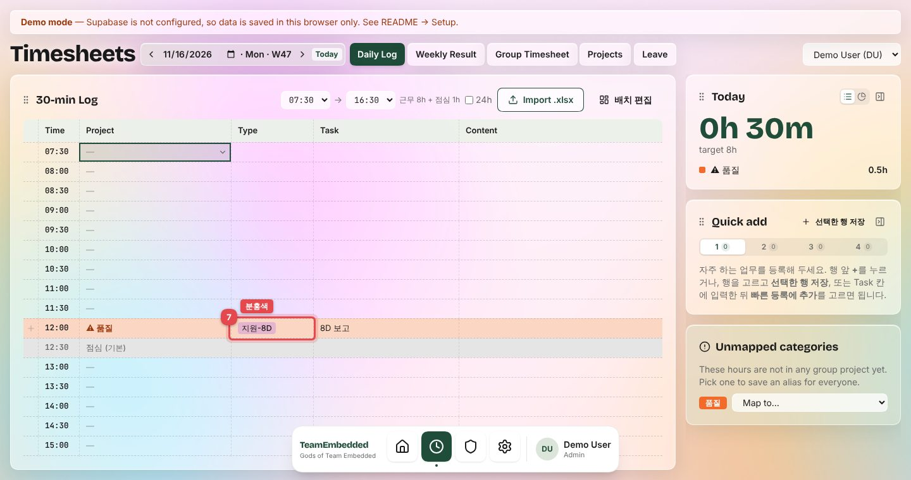

검증 보고서 · E2E
(버그) 아래쪽 행에서 Type 드롭다운을 열면 위쪽 컨트롤이 안 보임. Type도 Project·Task처럼 순서와 색상을 바꿀 수 있게.
| # | 테스트 케이스 | 기대 결과 | 실제 결과 | 판정 근거 (Assertion) | 결과 | 증적 |
|---|---|---|---|---|---|---|
| 1 | 드롭다운이 표 안에 다 들어가고 맨 위 안내 줄이 보임(위로·아래로 열 때 모두) | 세 행 모두 top ≥ 표 위쪽, bottom ≤ 표 아래쪽, "Type 선택" 줄 보임 | 20:down 414~715 (표 189~723) / 22:up 197~438 (표 189~723) / 24:up 197~500 (표 189~723) | popover rect ⊂ scroll area rect && header visible | PASS | 화면 1 |
| 2 | Type에도 끌기 손잡이·정렬 버튼·… 메뉴 | 손잡이 12개, … 12개, 정렬 버튼 보임 | 손잡이 12개, … 12개, 정렬 버튼 보임 | Drag/Options for 12개씩 && Sort options visible | PASS | 화면 2 |
| 3 | 끌어서 회의-INT를 맨 위로 | 첫 항목 '회의-INT' (전: '개발-신규') | 첫 항목 '회의-INT' | options[0] === '회의-INT' | PASS | 화면 2 |
| 4 | 새로 고쳐도 순서 유지 | 첫 항목 '회의-INT' | '회의-INT' | 새로 고친 뒤 options[0] === '회의-INT' | PASS | — |
| 5 | 정렬: 이름순 | 개발-선행검토, 개발-설계변경, 개발-신규 … | 개발-선행검토, 개발-설계변경, 개발-신규 … | 옵션 순서 === ko 이름순 | PASS | — |
| 6 | … 메뉴에서 고른 색이 드롭다운에 바로 보임 | 메뉴 제목 '지원-8D', 칩 분홍색 | 제목 '지원-8D', 칩 분홍색 | menu 첫 줄 === '지원-8D' && chip bg === chipBg(분홍) | PASS | 화면 3 |
| 7 | 표의 Type 칩도 고른 색, 새로 고쳐도 유지 | 12:00 행 지원-8D 칩 분홍색 | 분홍색 | cell(24, mid) chip bg === chipBg(분홍) | PASS | 화면 4 |
| 8 | Weekly Result도 개인 색, Projects의 팀 색은 그대로 | Weekly Result 칩 분홍색, Projects 팀 색은 분홍색 아님 | Weekly 분홍색, 팀 색 그대로 | work-mid bg === chipBg(분홍) && Projects swatch ≠ 분홍 | PASS | — |
| 9 | 페이지 오류 없음 | 0건 | 0건 | pageerror 수 === 0 | PASS | — |
빨간 테두리와 번호는 표의 테스트 케이스 번호입니다. 그 요소를 확인해 판정했습니다.



